JEE Main 2024 (Session 1), 30 Jan Shift 2: worked solutions for review
Questions and options are NTA’s own images; the green option is NTA’s final key. Every solution below was written by Claude
and checked against NTA’s final key. It is not NTA’s solution. Please mark anything unclear or wrong.
Q1 · Mathematics · MCQ · ID 4058591015
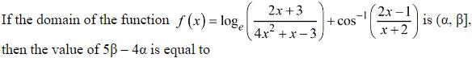
(1) 
(2) 
(3) 
Hint 1: Write the two conditions separately: the log's argument must be positive, and cos−1's input must lie in [−1, 1].
Hint 2: (2x + 3)/((4x − 3)(x + 1)) > 0 and −1 ≤ (2x − 1)/(x + 2) ≤ 1.
What this tests: Domain via rational inequalities.
1. Second condition: (x − 3)/(x + 2) ≤ 0 and (3x + 1)/(x + 2) ≥ 0 give x ∈ [−1/3, 3].
2. First condition (sign chart at −3/2, −1, 3/4): x ∈ (−3/2, −1) ∪ (3/4, ∞).
3. Domain = (3/4, 3], so α = 3/4, β = 3: 5β − 4α = 15 − 3 = 12.
Answer: (4)
If this felt hard: Revise 'Relations and Functions' and 'Linear Inequalities' (sign charts).
Claude’s answer: 4 · NTA final key: 4 · agrees · Answer recomputed with SymPy (tools/verify_pyq_solutions.py)
Q2 · Mathematics · MCQ · ID 4058591016
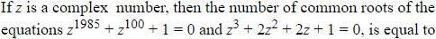
(1) 
(2) 
(3) 
(4) 
Hint 1: Factor the cubic: try z = −1 first.
Hint 2: z³ + 2z² + 2z + 1 = (z + 1)(z² + z + 1), roots −1, ω, ω². Test each in the first equation using ω³ = 1.
What this tests: Cube roots of unity; common roots.
1. z = −1: −1 + 1 + 1 = 1 ≠ 0.
2. z = ω: ω1985 = ω², ω100 = ω, so ω² + ω + 1 = 0. Works.
3. z = ω²: ω3970 = ω, ω200 = ω²: also 0. Works.
4. Two common roots.
Answer: (3)
If this felt hard: Revise 'Complex Numbers' (cube roots of unity).
Claude’s answer: 3 · NTA final key: 3 · agrees · Answer recomputed with SymPy (tools/verify_pyq_solutions.py)
Q3 · Mathematics · MCQ · ID 4058591017
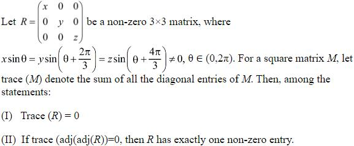
(3) 
Hint 1: Let the common value be k ≠ 0, so x = k/sin θ, etc. For II, recall adj(adj R) for a 3 × 3 matrix.
Hint 2: sin θ sin(θ + 2π/3) + sin(θ + 2π/3) sin(θ + 4π/3) + sin(θ + 4π/3) sin θ = −3/4. Also adj(adj R) = (det R)R.
What this tests: Diagonal matrices; trigonometric sums; adjoint of adjoint.
1. Trace R = x + y + z = k × (−3/4)/(sin θ sin(θ + 2π/3) sin(θ + 4π/3)) ≠ 0. So I is false.
2. trace(adj(adj R)) = xyz(x + y + z), which is never 0 here (x, y, z and their sum are all non-zero).
3. So the 'if' part of II never happens, and the statement 'if … then …' is true (vacuously).
Answer: (2)
If this felt hard: Revise 'Matrices', 'Determinants' (adj(adj A) = |A|n−2A) and trigonometric identities.
Claude’s answer: 2 · NTA final key: 2 · agrees · Answer recomputed with SymPy (tools/verify_pyq_solutions.py)
Note: Statement II is true only vacuously: its hypothesis can never hold. This matches NTA's key.
Q4 · Mathematics · MCQ · ID 4058591018
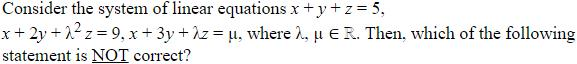
Hint 1: Find all λ that make the coefficient determinant zero. Is λ = 1 the only one?
Hint 2: det = −(2λ + 1)(λ − 1). So the determinant is also 0 at λ = −1/2.
What this tests: Consistency of linear systems.
1. λ = −1/2 gives no unique solution, so 'unique solution if λ ≠ 1 and μ ≠ 13' is NOT correct.
2. Checks of the others: at λ = 1 the system needs μ = 13 (infinitely many solutions), otherwise it is inconsistent; at λ = −1/2 and μ = 13 it is consistent.
Answer: (3)
If this felt hard: Revise 'Determinants'. Always solve det = 0 completely.
Claude’s answer: 3 · NTA final key: 3 · agrees · Answer recomputed with SymPy (tools/verify_pyq_solutions.py)
Q5 · Mathematics · ID 4058591019
Left out of the bank: dropped (NTA).
Q6 · Mathematics · MCQ · ID 4058591020
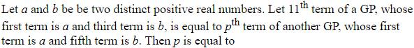
(1) 
(2) 
(3) 
(4) 
Hint 1: Write both GPs with the same first term a and use the given third or fifth term to find the ratio.
Hint 2: First GP: r² = b/a, 11th term = a(b/a)⁵. Second GP: s⁴ = b/a, p-th term = a(b/a)(p−1)/4.
What this tests: Terms of geometric progressions.
1. (p − 1)/4 = 5.
2. p = 21.
Answer: (1)
If this felt hard: Revise 'Sequences and Series'.
Claude’s answer: 1 · NTA final key: 1 · agrees · Answer recomputed with SymPy (tools/verify_pyq_solutions.py)
Q7 · Mathematics · MCQ · ID 4058591021
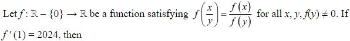
Hint 1: Differentiate f(x/y) = f(x)/f(y) with respect to x, then put x = y.
Hint 2: f(1) = 1 (put x = y). Differentiating: f'(x/y)/y = f'(x)/f(y).
What this tests: Functional equations by differentiation.
1. With x = y: f'(1)/y = f'(y)/f(y), i.e. y f'(y) = 2024 f(y).
2. So x f'(x) − 2024 f(x) = 0.
Answer: (1)
If this felt hard: Revise 'Continuity and Differentiability'.
Claude’s answer: 1 · NTA final key: 1 · agrees · Answer recomputed with SymPy (tools/verify_pyq_solutions.py)
Q8 · Mathematics · MCQ · ID 4058591022
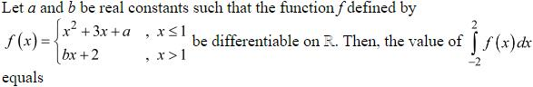
(3) 
(4) 
Hint 1: Differentiable at x = 1 means continuous AND equal one-sided derivatives there.
Hint 2: Continuity: 4 + a = b + 2. Derivatives: 2 + 3 = b.
What this tests: Differentiability of a piecewise function; definite integrals.
1. b = 5, a = 3.
2. ∫−21 (x² + 3x + 3) dx = 15/2 and ∫12 (5x + 2) dx = 19/2.
3. Total = 17.
Answer: (3)
If this felt hard: Revise 'Continuity and Differentiability' and 'Integrals'.
Claude’s answer: 3 · NTA final key: 3 · agrees · Answer recomputed with SymPy (tools/verify_pyq_solutions.py)
Q9 · Mathematics · MCQ · ID 4058591023
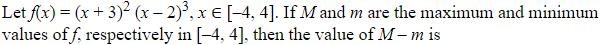
(4) 
Hint 1: Find f' and its zeros, then compare f at those points and at the ends of [−4, 4].
Hint 2: f'(x) = (x + 3)(x − 2)²(5x + 5). Critical points −3, −1, 2.
What this tests: Absolute maximum and minimum on a closed interval.
1. f(−4) = −216, f(−3) = 0, f(−1) = −108, f(2) = 0, f(4) = 392.
2. M = 392, m = −216, M − m = 608.
Answer: (3)
If this felt hard: Revise 'Application of Derivatives'. Do not forget the end points.
Claude’s answer: 3 · NTA final key: 3 · agrees · Answer recomputed with SymPy (tools/verify_pyq_solutions.py)
Q10 · Mathematics · MCQ · ID 4058591024
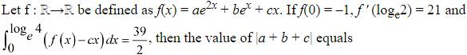
(1) 
(2) 
(3) 
(4) 
Hint 1: Use each condition to get one equation in a, b, c.
Hint 2: a + b = −1. f'(ln 2) = 8a + 2b + c = 21. ∫0ln 4 (ae2x + bex) dx = 15a/2 + 3b = 39/2.
What this tests: Using derivatives and integrals to find constants.
1. 15a/2 + 3(−1 − a) = 39/2 gives a = 5, b = −6.
2. c = 21 − 40 + 12 = −7.
3. |a + b + c| = |−8| = 8.
Answer: (1)
If this felt hard: Revise 'Integrals'.
Claude’s answer: 1 · NTA final key: 1 · agrees · Answer recomputed with SymPy (tools/verify_pyq_solutions.py)
Q11 · Mathematics · MCQ · ID 4058591025
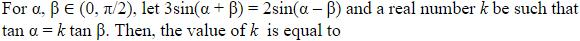
(4) 
Hint 1: Expand both sides with compound-angle formulas and collect sin α cos β and cos α sin β.
Hint 2: 3 sin α cos β + 3 cos α sin β = 2 sin α cos β − 2 cos α sin β.
What this tests: Compound-angle formulas.
1. sin α cos β = −5 cos α sin β.
2. tan α = −5 tan β, so k = −5.
Answer: (3)
If this felt hard: Revise 'Trigonometric Functions'.
Claude’s answer: 3 · NTA final key: 3 · agrees · Answer recomputed with SymPy (tools/verify_pyq_solutions.py)
Note: Strictly, with α, β in (0, π/2) both tangents are positive, so no such α, β exist; the intended answer from the algebra is k = −5, as in the key.
Q12 · Mathematics · MCQ · ID 4058591026
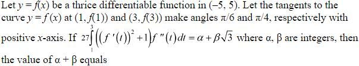
(2) 
Hint 1: Spot that ((f')² + 1)f'' is the derivative of something in f'.
Hint 2: d/dt[(f')³/3 + f'] = ((f')² + 1)f''. Also f'(1) = tan(π/6) = 1/√3 and f'(3) = tan(π/4) = 1.
What this tests: Integration by substitution; slope of a tangent.
1. Integral = (1/3 + 1) − (1/(9√3) + 1/√3) = 4/3 − 10/(9√3).
2. × 27: 36 − 30/√3 = 36 − 10√3.
3. α + β = 36 − 10 = 26.
Answer: (1)
If this felt hard: Revise 'Integrals' and 'Application of Derivatives'.
Claude’s answer: 1 · NTA final key: 1 · agrees · Answer recomputed with SymPy (tools/verify_pyq_solutions.py)
Q13 · Mathematics · MCQ · ID 4058591027
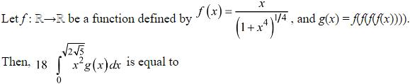
(1) 
(3) 
(4)
Hint 1: Compute f(f(x)) and look for a pattern for f applied n times.
Hint 2: f(f(x)) = x/(1 + 2x⁴)1/4, so g(x) = f⁴(x) = x/(1 + 4x⁴)1/4. Then put u = 1 + 4x⁴.
What this tests: Repeated composition; substitution in definite integrals.
1. ∫ x³/(1 + 4x⁴)1/4 dx = (1/16)∫ u−1/4 du = u3/4/12.
2. Upper limit: x⁴ = 20, u = 81, u3/4 = 27. Lower: u = 1.
3. Integral = (27 − 1)/12 = 13/6; × 18 = 39.
Answer: (4)
If this felt hard: Revise 'Relations and Functions' (composition) and 'Integrals'.
Claude’s answer: 4 · NTA final key: 4 · agrees · Answer recomputed with SymPy (tools/verify_pyq_solutions.py)
Q14 · Mathematics · MCQ · ID 4058591028
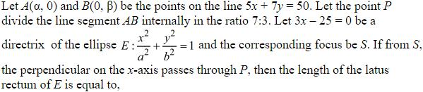
Hint 1: Find A and B from the line, then P by the section formula.
Hint 2: A = (10, 0), B = (0, 50/7), P = (3·A + 7·B)/10 = (3, 5). Focus S = (ae, 0) with ae = 3 (P is directly above S), and a/e = 25/3.
What this tests: Section formula; ellipse focus and directrix.
1. a² = 3 × 25/3 = 25, so a = 5 and e = 3/5.
2. b² = 25(1 − 9/25) = 16.
3. Latus rectum = 2b²/a = 32/5.
Answer: (3)
If this felt hard: Revise 'Conic Sections' (ellipse).
Claude’s answer: 3 · NTA final key: 3 · agrees · Answer recomputed with SymPy (tools/verify_pyq_solutions.py)
Q15 · Mathematics · MCQ · ID 4058591029
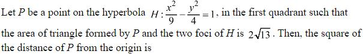
(1) 
(2) 
(4) 
Hint 1: The base of the triangle is the segment between the foci. Its height is the y-coordinate of P.
Hint 2: Foci (±√13, 0), since c² = 9 + 4. Area = (1/2)(2√13)y.
What this tests: Hyperbola foci; area of a triangle.
1. √13 y = 2√13, so y = 2.
2. x²/9 = 1 + 4/4 = 2, so x² = 18.
3. OP² = 18 + 4 = 22.
Answer: (3)
If this felt hard: Revise 'Conic Sections' (hyperbola).
Claude’s answer: 3 · NTA final key: 3 · agrees · Answer recomputed with SymPy (tools/verify_pyq_solutions.py)
Q16 · Mathematics · MCQ · ID 4058591030
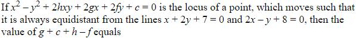
(1) 
(2) 
(3) 
Hint 1: Equidistant from two lines: equal perpendicular distances. Both lines have the same √(a² + b²) = √5.
Hint 2: (x + 2y + 7)² = (2x − y + 8)². Expand and match with x² − y² + 2hxy + 2gx + 2fy + c = 0.
What this tests: Locus equidistant from two lines (angle bisectors).
1. Difference: −3x² + 3y² + 8xy − 18x + 44y − 15 = 0. Divide by −3: x² − y² − (8/3)xy + 6x − (44/3)y + 5 = 0.
2. h = −4/3, g = 3, f = −22/3, c = 5.
3. g + c + h − f = 3 + 5 − 4/3 + 22/3 = 14.
Answer: (3)
If this felt hard: Revise 'Straight Lines'.
Claude’s answer: 3 · NTA final key: 3 · agrees · Answer recomputed with SymPy (tools/verify_pyq_solutions.py)
Q17 · Mathematics · MCQ · ID 4058591031
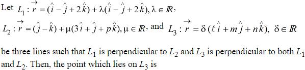
Hint 1: L1 ⊥ L2 gives p. L3 is along the cross product of the two directions, through the origin.
Hint 2: (1, −1, 2)·(3, 1, p) = 0 gives p = −1. Direction of L3 = (1, −1, 2) × (3, 1, −1).
What this tests: Perpendicular lines in 3D; cross product.
1. (1, −1, 2) × (3, 1, −1) = (−1, 7, 4).
2. L3 passes through the origin with this direction, so (−1, 7, 4) lies on it.
Answer: (2)
If this felt hard: Revise 'Three Dimensional Geometry'.
Claude’s answer: 2 · NTA final key: 2 · agrees · Answer recomputed with SymPy (tools/verify_pyq_solutions.py)
Q18 · Mathematics · MCQ · ID 4058591032
(1) 
(2) 
(3) 
(4) 
Hint 1: Expand |u − v|² = |u|² + |v|² − 2u·v. What is (b × a)·b?
Hint 2: b × a is perpendicular to b, so (b × a)·b = 0.
What this tests: Magnitude of a vector difference; perpendicularity of the cross product.
1. |(b × a) − b|² = 4 + 1 − 0 = 5.
Answer: (4)
If this felt hard: Revise 'Vector Algebra'.
Claude’s answer: 4 · NTA final key: 4 · agrees · Answer recomputed with SymPy (tools/verify_pyq_solutions.py)
Q19 · Mathematics · MCQ · ID 4058591033
(1) 
(2)
(3)
(4)
Hint 1: Use a·b = |a||b| cos(π/4) to find |a|.
Hint 2: |b| = √6, so 3√2 = |a|√6/√2 = |a|√3. Also |a × b|² = |a|²|b|² sin²(π/4).
What this tests: Dot and cross products.
1. |a| = √6, so 1 + α² + β² = 6, α² + β² = 5.
2. |a × b|² = 6 × 6 × 1/2 = 18.
3. 5 × 18 = 90.
Answer: (2)
If this felt hard: Revise 'Vector Algebra'.
Claude’s answer: 2 · NTA final key: 2 · agrees · Answer recomputed with SymPy (tools/verify_pyq_solutions.py)
Q20 · Mathematics · MCQ · ID 4058591034
(1) 
(2) 
(3)
(4)
Hint 1: Use Bayes' theorem with P(A) = P(B) = 1/2.
Hint 2: P(white | A) = 3/10, P(white | B) = 3/5.
What this tests: Bayes' theorem.
1. P(A | white) = (1/2)(3/10)/((1/2)(3/10) + (1/2)(3/5)) = 0.3/0.9 = 1/3.
Answer: (2)
If this felt hard: Revise 'Probability'.
Claude’s answer: 2 · NTA final key: 2 · agrees · Answer recomputed with SymPy (tools/verify_pyq_solutions.py)
Q21 · Mathematics · Numerical · ID 4058591035
Hint 1: A symmetric relation is decided by the diagonal pairs and by the unordered off-diagonal pairs.
Hint 2: 4 diagonal pairs and C(4, 2) = 6 off-diagonal pairs {a, b}: 210 symmetric relations. Reflexive ones must include all 4 diagonal pairs: 2⁶.
What this tests: Counting symmetric and reflexive relations.
1. Symmetric: 1024. Symmetric and reflexive: 64.
2. Symmetric but not reflexive: 1024 − 64 = 960.
Answer: 960
If this felt hard: Revise 'Relations and Functions'.
Claude’s answer: 960 · NTA final key: 960 · agrees · Answer recomputed with SymPy (tools/verify_pyq_solutions.py)
Q22 · Mathematics · Numerical · ID 4058591036
Hint 1: One factor gives x = 0 at once. Can the bracket ever be zero?
Hint 2: x² + 3|x| + 5|x − 1| + 6|x − 2| is a sum of non-negative terms.
What this tests: Equations with modulus.
1. The terms are never all zero together (|x − 1| and |x − 2| cannot both vanish), so the bracket is always positive.
2. Only x = 0: 1 solution.
Answer: 1
If this felt hard: Revise 'Relations and Functions' (modulus function).
Claude’s answer: 1 · NTA final key: 1 · agrees · Answer recomputed with SymPy (tools/verify_pyq_solutions.py)
Q23 · Mathematics · Numerical · ID 4058591037
Hint 1: List the possible (a, b, c) = numbers chosen from A, B, C with a + b + c = 15, each at least 4, b, c ≤ 6, a ≤ 8.
Hint 2: Possible splits: (7, 4, 4), (6, 4, 5), (6, 5, 4), (5, 4, 6), (5, 5, 5), (5, 6, 4), (4, 5, 6), (4, 6, 5).
What this tests: Selections with restrictions (case-wise counting).
1. (7, 4, 4): 8 × 15 × 15 = 1800.
2. a = 6: 28 × 2 × 15 × 6 = 5040.
3. a = 5: 56 × (2 × 15 × 1 + 6 × 6) = 3696.
4. a = 4: 70 × 2 × 6 × 1 = 840.
5. Total = 11376.
Answer: 11376
If this felt hard: Revise 'Permutations and Combinations'.
Claude’s answer: 11376 · NTA final key: 11376 · agrees · Answer recomputed with SymPy (tools/verify_pyq_solutions.py)
Q24 · Mathematics · Numerical · ID 4058591038
Hint 1: Use C(n, r)/(r + 1) = C(n + 1, r + 1)/(n + 1), then Vandermonde's identity.
Hint 2: α = (1/(n + 1)) Σ C(n, k)C(n + 1, k + 1) = C(2n + 1, n + 1)/(n + 1). β = C(2n + 1, n + 2)/(n + 1).
What this tests: Sums of products of binomial coefficients (Vandermonde).
1. C(2n + 1, n + 2)/C(2n + 1, n + 1) = n/(n + 2).
2. 5α = 6β gives 5 = 6n/(n + 2), so n = 10.
Answer: 10
If this felt hard: Revise 'Binomial Theorem'.
Claude’s answer: 10 · NTA final key: 10 · agrees · Answer recomputed with SymPy (tools/verify_pyq_solutions.py)
Q25 · Mathematics · Numerical · ID 4058591039
Hint 1: Find Sk first, then sum Sk for k = 1 to n.
Hint 2: Sk = (k/2)(6 + 4(k − 1)) = 2k² + k. Σ Sk = n(n + 1)(4n + 5)/6.
What this tests: Sum of sums of an AP.
1. 6/(n(n + 1)) × Σ Sk = 4n + 5.
2. 40 < 4n + 5 < 42 gives 4n + 5 = 41, so n = 9.
Answer: 9
If this felt hard: Revise 'Sequences and Series'.
Claude’s answer: 9 · NTA final key: 9 · agrees · Answer recomputed with SymPy (tools/verify_pyq_solutions.py)
Q26 · Mathematics · Numerical · ID 4058591040
Hint 1: Draw it. The line touches the parabola: find where. Then use horizontal strips (integrate in y).
Hint 2: (y − 2)² = 2y − 5 gives (y − 3)² = 0: the line is tangent at (2, 3). It meets the y-axis at (0, 2).
What this tests: Area bounded by a parabola, its tangent and the axes.
1. For 0 ≤ y ≤ 2: from x = 0 to the parabola: ∫02 ((y − 2)² + 1) dy = 14/3.
2. For 2 ≤ y ≤ 3: from the line to the parabola: ∫23 (y − 3)² dy = 1/3.
3. Area = 5.
Answer: 5
If this felt hard: Revise 'Application of Integrals'.
Claude’s answer: 5 · NTA final key: 5 · agrees · Answer recomputed with SymPy (tools/verify_pyq_solutions.py)
Q27 · Mathematics · Numerical · ID 4058591041
Hint 1: Find the tangent's intercepts on the axes and write the triangle's area in x, y and p = Y'.
Hint 2: X-intercept: x − y/p; Y-intercept: y − xp. Area = (1/2)(x − y/p)(y − xp) = xy − x²p/2 − y²/(2p).
What this tests: Differential equation from a tangent-area condition.
1. Setting this equal to −y²/(2p) + 1 gives xy − x²p/2 = 1, so p = 2y/x − 2/x².
2. Linear equation: (y/x²)' = −2/x⁴, so y/x² = 2/(3x³) + C. Y(1) = 1 gives C = 1/3.
3. Y(2) = 4(1/12 + 1/3) = 5/3, so 12Y(2) = 20.
Answer: 20
If this felt hard: Revise 'Differential Equations' and 'Application of Derivatives' (tangents).
Claude’s answer: 20 · NTA final key: 20 · agrees · Answer recomputed with SymPy (tools/verify_pyq_solutions.py)
Q28 · Mathematics · Numerical · ID 4058591042
Hint 1: The common chord is perpendicular to the line of centres. Use the triangle formed by the two centres and an intersection point.
Hint 2: The triangle has sides 5, 4 and α, with angle θ between the radii, sin θ = √63/8. Half the common chord is the height of this triangle onto side α.
What this tests: Two intersecting circles: common chord.
1. Area of the triangle = (1/2) × 5 × 4 × sin θ = 5√63/4.
2. Half the chord is the height onto side α: β/2 = 2 × area/α = 5√63/(2α), so β = 5√63/α.
3. αβ = 5√63, so (αβ)² = 25 × 63 = 1575.
Answer: 1575
If this felt hard: Revise 'Conic Sections' (circle). Area = (1/2)ab sin θ gives the height without finding α.
Claude’s answer: 1575 · NTA final key: 1575 · agrees · Answer recomputed with SymPy (tools/verify_pyq_solutions.py)
Q29 · Mathematics · Numerical · ID 4058591043
Hint 1: Write M and N with parameters s and t. P, M, N lie on one line, so PM and PN are parallel.
Hint 2: M = (1 + 3s, 2 + 2s, −1 − 2s), N = (−2 − 3t, 2 − 2t, 1 + 4t). Set M − P = k(N − P).
What this tests: A line meeting two given lines through a fixed point.
1. Comparing components gives s = 2t and then t = 2, s = 4.
2. M = (13, 10, −9), so α + β + γ = 14. N = (−8, −2, 9), so a + b + c = −1.
3. 14²/(−1)² = 196.
Answer: 196
If this felt hard: Revise 'Three Dimensional Geometry'.
Claude’s answer: 196 · NTA final key: 196 · agrees · Answer recomputed with SymPy (tools/verify_pyq_solutions.py)
Q30 · Mathematics · Numerical · ID 4058591044
Hint 1: Compute Σf, Σfx and Σfx².
Hint 2: N = 22, Σfx = 176 (mean 8), Σfx² = 2048.
What this tests: Variance of a frequency distribution.
1. σ² = 2048/22 − 64 ≈ 93.09 − 64 = 29.09.
2. ≈ 29.
Answer: 29
If this felt hard: Revise 'Statistics'.
Claude’s answer: 29 · NTA final key: 29 · agrees · Answer recomputed with SymPy (tools/verify_pyq_solutions.py)
Note: Exact value 29.09; NTA's key is 29.
Q31 · Physics · MCQ · ID 4058591045
(1)
(2) 
(3)
(4) 
Hint 1: Write the dimensions of c, G and h, and match powers of M, L, T.
Hint 2: [c] = LT−1, [G] = M−1L³T−2, [h] = ML²T−1.
What this tests: Dimensional analysis.
1. G−1/2h1/2: M1/2+1/2 L−3/2+1 T1−1/2 = M L−1/2 T1/2.
2. cP must cancel L−1/2T1/2: P = 1/2.
(This is the Planck mass √(hc/G).)
Answer: (4)
If this felt hard: Revise 'Units and Measurements'.
Claude’s answer: 4 · NTA final key: 4 · agrees · Answer recomputed with SymPy (tools/verify_pyq_solutions.py)
Q32 · Physics · MCQ · ID 4058591046
(1)
(2)
(3)
(4)
Hint 1: Equal times of flight from the same height need equal vertical components of velocity.
Hint 2: Angles are with the vertical: vertical component = v cos(angle). vA cos 45° = vB cos 60°.
What this tests: Projectile from a height.
1. vA/√2 = vB/2.
2. vA : vB = √2 : 2 = 1 : √2.
Answer: (2)
If this felt hard: Revise 'Motion in a Plane'.
Claude’s answer: 2 · NTA final key: 2 · agrees · Answer recomputed with SymPy (tools/verify_pyq_solutions.py)
Note: With these angles the horizontal components differ, so the ranges cannot also be equal; the key's answer follows from equal times of flight.
Q33 · Physics · MCQ · ID 4058591047
(1)
(2)
(3)
(4)
Hint 1: Find the common acceleration first. Each string pulls everything behind it.
Hint 2: a = 80/(5 + 3 + 2) = 8 m/s². T1 pulls A only; T2 pulls A and B.
What this tests: Connected bodies.
1. T1 = 5 × 8 = 40 N.
2. T2 = 8 × 8 = 64 N.
Answer: (1)
If this felt hard: Revise 'Laws of Motion'.
Claude’s answer: 1 · NTA final key: 1 · agrees · Answer recomputed by script (tools/verify_pyq_solutions.py)
Q34 · Physics · MCQ · ID 4058591048
(1)
(2)
(3)
(4)
Hint 1: The block stays put while the slope angle satisfies tan θ ≤ μ.
Hint 2: tan θ = dy/dx = x/2 ≤ 0.5.
What this tests: Friction on a curved surface (angle of repose).
1. x ≤ 1, so y ≤ 1/4.
2. Maximum height = 1/4 m.
Answer: (1)
If this felt hard: Revise 'Laws of Motion' (friction).
Claude’s answer: 1 · NTA final key: 1 · agrees · Answer recomputed with SymPy (tools/verify_pyq_solutions.py)
Q35 · Physics · MCQ · ID 4058591049
(1)
(2)
(3)
(4)
Hint 1: Friction depends on the normal reaction, which on an incline is mg cos θ.
Hint 2: f = μmg cos 60°. Work against friction = f × distance.
What this tests: Work against friction on an incline.
1. f = 0.1 × 1 × 10 × 1/2 = 0.5 N.
2. W = 0.5 × 10 = 5 J.
Answer: (2)
If this felt hard: Revise 'Work, Energy and Power' and 'Laws of Motion' (friction).
Claude’s answer: 2 · NTA final key: 2 · agrees · Answer recomputed by script (tools/verify_pyq_solutions.py)
Note: Uses the given μ = 0.1 for the moving block.
Q36 · Physics · MCQ · ID 4058591050
(1)
(2)
(3)
(4)
Hint 1: Escape velocity = √(2GM/R). How does it scale with M and R?
Hint 2: v ∝ √(M/R). Here M/R becomes (1/6)/(1/3) = 1/2 of Earth's.
What this tests: Escape velocity.
1. v = 11.2/√2 ≈ 7.9 km/s.
Answer: (2)
If this felt hard: Revise 'Gravitation'.
Claude’s answer: 2 · NTA final key: 2 · agrees · Answer recomputed by script (tools/verify_pyq_solutions.py)
Q37 · Physics · MCQ · ID 4058591051
(1)
(2)
(3)
(4)
Hint 1: List the stages: heat ice, melt, heat water, boil. During melting and boiling, does the temperature change?
Hint 2: Temperature is constant during a change of state. Water's specific heat is about twice that of ice, so its line is less steep. Latent heat of vaporisation is much larger than that of fusion.
What this tests: Heating curve and latent heat.
1. Rise (ice −10 → 0 °C), flat (melting), rise (water 0 → 100 °C, gentler slope), flat (boiling, longer).
2. The process ends with steam at 100 °C, so the graph ends on the flat part.
Answer: (1)
If this felt hard: Revise 'Thermal Properties of Matter'.
Claude’s answer: 1 · NTA final key: 1 · agrees · Theory question: not computable, needs a teacher’s review
Q38 · Physics · MCQ · ID 4058591052
(1)
(2)
(3)
(4)
Hint 1: Which is steeper on a P–V diagram through the same point: an adiabatic or an isothermal?
Hint 2: Slope of an adiabatic = γ × (slope of an isothermal), with γ > 1.
What this tests: Isothermal and adiabatic curves.
1. B is steeper: adiabatic, PVγ = k.
2. A is isothermal: PV = k.
Answer: (2)
If this felt hard: Revise 'Thermodynamics'.
Claude’s answer: 2 · NTA final key: 2 · agrees · Theory question: not computable, needs a teacher’s review
Q39 · Physics · MCQ · ID 4058591053
(1)
(2)
(3)
(4)
Hint 1: For a mixture, add the heat capacities: CV,mix = Σn CV/Σn.
Hint 2: Monoatomic CV = (3/2)R, diatomic CV = (5/2)R.
What this tests: Adiabatic exponent of a gas mixture.
1. CV,mix = (3 × 1.5 + 2 × 2.5)R/5 = 1.9R, so CP,mix = 2.9R.
2. γ = 2.9/1.9 ≈ 1.52.
Answer: (2)
If this felt hard: Revise 'Kinetic Theory'. Do not average the γ values directly.
Claude’s answer: 2 · NTA final key: 2 · agrees · Answer recomputed by script (tools/verify_pyq_solutions.py)
Q40 · Physics · MCQ · ID 4058591054
(1)
(2)
(3)
(4)
Hint 1: The line charge's field supplies the centripetal force.
Hint 2: E = 2kλ/r. qE = mv²/r.
What this tests: Field of a line charge; circular motion.
1. v = √(2kλq/m) (independent of r).
2. T = 2πr/v = 2πr√(m/(2kλq)).
Answer: (1)
If this felt hard: Revise 'Electric Charges and Fields' (Gauss's law applications).
Claude’s answer: 1 · NTA final key: 1 · agrees · Answer recomputed with SymPy (tools/verify_pyq_solutions.py)
Q41 · Physics · MCQ · ID 4058591055
(1)
(2)
(3)
(4)
Hint 1: Find the new resistance of the two halves in parallel, then use P = V²/R.
Hint 2: Each half: R/2. In parallel: R/4.
What this tests: Power with resistors in parallel.
1. P = V²/(R/4) = 4V²/R = 4W.
Answer: (3)
If this felt hard: Revise 'Current Electricity'.
Claude’s answer: 3 · NTA final key: 3 · agrees · Answer recomputed by script (tools/verify_pyq_solutions.py)
Q42 · Physics · MCQ · ID 4058591056
(1)
(2) 
(3)
(4) 
Hint 1: Recall the four Maxwell equations in integral form: which one has E·da, B·da, E·dl and B·dl?
Hint 2: Gauss (E): flux of E = charge/ε0. Gauss (B): flux of B = 0. Faraday: circulation of E = −dΦB/dt. Ampère: circulation of B = μ0I.
What this tests: Maxwell's equations in integral form.
1. A → II, B → III, C → IV, D → I.
Answer: (2)
If this felt hard: Revise 'Electromagnetic Waves' and 'Electromagnetic Induction'.
Claude’s answer: 2 · NTA final key: 2 · agrees · Theory question: not computable, needs a teacher’s review
Q43 · Physics · MCQ · ID 4058591057
(1)
(2)
(3)
(4)
Hint 1: Current is in phase with voltage for a resistor. At what phase is it half the peak, and at what phase is it the peak?
Hint 2: I = I0 sin(100πt). Half peak at 100πt = π/6, peak at π/2.
What this tests: AC through a resistor; phase and time.
1. Δt = (π/2 − π/6)/(100π) = 1/300 s ≈ 3.3 ms.
Answer: (1)
If this felt hard: Revise 'Alternating Current'.
Claude’s answer: 1 · NTA final key: 1 · agrees · Answer recomputed by script (tools/verify_pyq_solutions.py)
Q44 · Physics · MCQ · ID 4058591058
(1)
(2)
(3)
(4)
Hint 1: For complete absorption, momentum delivered = energy/c.
Hint 2: p = E/c.
What this tests: Momentum of electromagnetic radiation.
1. p = 6.48 × 10⁵/(3 × 10⁸) = 2.16 × 10−3 kg m/s.
Answer: (1)
If this felt hard: Revise 'Electromagnetic Waves' and 'Dual Nature of Radiation and Matter'.
Claude’s answer: 1 · NTA final key: 1 · agrees · Answer recomputed by script (tools/verify_pyq_solutions.py)
Q45 · Physics · MCQ · ID 4058591059
(1)
(2)
(3)
(4)
Hint 1: The first polaroid halves unpolarised light. Then use Malus's law.
Hint 2: I = (I0/2) cos²45°.
What this tests: Polarisation; Malus's law.
1. I = (I0/2)(1/2) = I0/4.
Answer: (3)
If this felt hard: Revise 'Wave Optics'.
Claude’s answer: 3 · NTA final key: 3 · agrees · Answer recomputed by script (tools/verify_pyq_solutions.py)
Q46 · Physics · MCQ · ID 4058591060
(1)
(2)
(3)
(4)
Hint 1: Write Einstein's equation as Ek = hν − φ. Compare with y = mx + c.
Hint 2: Slope = h, intercept on the Ek axis = −φ.
What this tests: Photoelectric equation as a straight line.
1. The slope of Ek against ν is Planck's constant h.
Answer: (1)
If this felt hard: Revise 'Dual Nature of Radiation and Matter'.
Claude’s answer: 1 · NTA final key: 1 · agrees · Theory question: not computable, needs a teacher’s review
Note: If E_{k} were in eV the slope would be h/e; the key takes E_{k} in joules.
Q47 · Physics · MCQ · ID 4058591061
(1)
(2)
(3)
(4)
Hint 1: The released energy ΔMc² becomes the kinetic energy of the three fragments, each of mass about M/3.
Hint 2: 3 × (1/2)(M/3)v² = ΔMc².
What this tests: Mass defect and kinetic energy of fission fragments.
1. (1/2)Mv² = ΔMc².
2. v = c√(2ΔM/M).
Answer: (2)
If this felt hard: Revise 'Nuclei'.
Claude’s answer: 2 · NTA final key: 2 · agrees · Answer recomputed with SymPy (tools/verify_pyq_solutions.py)
Q48 · Physics · MCQ · ID 4058591062
(1) 
(2) 
(3) 
(4) 
Hint 1: Magnetic moment of an orbiting electron μ = evr/2. How do v and r depend on n?
Hint 2: Bohr model: r ∝ n², v ∝ 1/n.
What this tests: Magnetic moment of a Bohr orbit.
1. μ ∝ vr ∝ (1/n)(n²) = n.
2. x = 1.
Answer: (2)
If this felt hard: Revise 'Atoms' and 'Moving Charges and Magnetism'.
Claude’s answer: 2 · NTA final key: 2 · agrees · Theory question: not computable, needs a teacher’s review
Q49 · Physics · MCQ · ID 4058591063
(1)
(2)
(3)
(4)
Hint 1: Both diodes are forward biased. Subtract their barrier voltages first.
Hint 2: Ge drops about 0.3 V and Si about 0.7 V.
What this tests: Diodes in series with resistors (knee voltages).
1. Remaining: 15 − 1.0 = 14 V across 1.5 + 2.5 = 4 kΩ, so I = 3.5 mA.
2. VL = 3.5 mA × 2.5 kΩ = 8.75 V.
Answer: (2)
If this felt hard: Revise 'Semiconductor Electronics'.
Claude’s answer: 2 · NTA final key: 2 · agrees · Answer recomputed by script (tools/verify_pyq_solutions.py)
Q50 · Physics · MCQ · ID 4058591064
(1)
(2)
(3)
(4)
Hint 1: Vernier constant = 1 MSD − 1 VSD.
Hint 2: 50 VSD = 49 MSD, so 1 VSD = (49/50) MSD.
What this tests: Vernier constant.
1. VC = (1 − 49/50) × 0.5 mm = 0.01 mm.
Answer: (3)
If this felt hard: Revise 'Units and Measurements' (vernier callipers).
Claude’s answer: 3 · NTA final key: 3 · agrees · Answer recomputed by script (tools/verify_pyq_solutions.py)
Q51 · Physics · Numerical · ID 4058591065
Hint 1: A vector parallel to B with the same length as A is |A| × (unit vector of B).
Hint 2: |A| = 5 and B̂ = (4î + 3ĵ)/5.
What this tests: Unit vectors.
1. The vector is 4î + 3ĵ, so x = 4.
Answer: 4
If this felt hard: Revise 'Motion in a Plane' (vectors).
Claude’s answer: 4 · NTA final key: 4 · agrees · Answer recomputed by script (tools/verify_pyq_solutions.py)
Q52 · Physics · Numerical · ID 4058591066
Hint 1: Angular momentum is conserved when the discs join. Find the common ω, then compare kinetic energies.
Hint 2: ω = (I1ω1 + I2ω2)/(I1 + I2) = (40 + 8)/6.
What this tests: Conservation of angular momentum (rotational collision).
1. ω = 8 rad/s.
2. KE before = 200 + 16 = 216 J; after = (1/2) × 6 × 64 = 192 J.
3. Loss = 24 J.
Answer: 24
If this felt hard: Revise 'System of Particles and Rotational Motion'.
Claude’s answer: 24 · NTA final key: 24 · agrees · Answer recomputed by script (tools/verify_pyq_solutions.py)
Q53 · Physics · Numerical · ID 4058591067
Hint 1: Volume is conserved. How is the big drop's radius related to the small drops' radius?
Hint 2: 1000 × (4/3)πr³ = (4/3)πR³, so R = 10r. Surface energy = T × area.
What this tests: Surface energy of drops.
1. E1 = 1000 × 4πr²T, E2 = 4π(10r)²T = 400πr²T.
2. E1 : E2 = 10 : 1.
Answer: 10
If this felt hard: Revise 'Mechanical Properties of Fluids' (surface tension).
Claude’s answer: 10 · NTA final key: 10 · agrees · Answer recomputed by script (tools/verify_pyq_solutions.py)
Q54 · Physics · Numerical · ID 4058591068
Hint 1: Intensity of a point source falls as 1/r².
Hint 2: Take the given 16 × 10−8 W/m² as the intensity at 1 m. Then I(r) = 16 × 10−8/r².
What this tests: Inverse-square law for intensity.
1. I(2) = 4 × 10−8, I(4) = 1 × 10−8.
2. Difference = 3 × 10−8 W/m².
Answer: 3
If this felt hard: Revise 'Waves'.
Claude’s answer: 3 · NTA final key: 3 · agrees · Answer recomputed by script (tools/verify_pyq_solutions.py)
Note: The paper says 'at the origin', where a point source's intensity is undefined; NTA's key (3) matches taking it as the intensity at 1 m.
Q55 · Physics · Numerical · ID 4058591069
Hint 1: The angle stays the same, so (electric force)/(effective weight) is unchanged.
Hint 2: In the liquid: electric force ÷ K, weight replaced by the apparent weight mg(1 − ρl/ρ).
What this tests: Equilibrium of charged spheres; dielectric constant and buoyancy.
1. (F/K)/(mg(1 − 0.7/1.4)) = F/(mg).
2. K × (1/2) = 1, so K = 2.
Answer: 2
If this felt hard: Revise 'Electric Charges and Fields'.
Claude’s answer: 2 · NTA final key: 2 · agrees · Answer recomputed with SymPy (tools/verify_pyq_solutions.py)
Q56 · Physics · Numerical · ID 4058591070
Hint 1: The voltmeter is in parallel with the 100 Ω resistor and changes the circuit. Find the current from the 200 Ω resistor.
Hint 2: Voltage across 200 Ω = 4 − 1 = 3 V, so I = 15 mA. The 100 Ω ∥ RV combination has 1 V across it.
What this tests: Loading effect of a voltmeter.
1. Parallel resistance = 1/0.015 ≈ 66.7 Ω.
2. 1/RV = 0.015 − 0.010 = 0.005, so RV = 200 Ω.
Answer: 200
If this felt hard: Revise 'Current Electricity'.
Claude’s answer: 200 · NTA final key: 200 · agrees · Answer recomputed by script (tools/verify_pyq_solutions.py)
Q57 · Physics · Numerical · ID 4058591071
Hint 1: Add the fields of the four sides. Use B = (μ0I/4πd)(sin θ1 + sin θ2) for one side.
Hint 2: d = 0.5 m from the centre to each side, θ1 = θ2 = 45°.
What this tests: Field of a finite straight wire; square loop.
1. One side: 10−7 × 5/0.5 × √2 = √2 × 10−6 T.
2. Four sides: 4√2 × 10−6 = 40√2 × 10−7 T.
3. X = 40.
Answer: 40
If this felt hard: Revise 'Moving Charges and Magnetism' (Biot–Savart law).
Claude’s answer: 40 · NTA final key: 40 · agrees · Answer recomputed by script (tools/verify_pyq_solutions.py)
Q58 · Physics · Numerical · ID 4058591072
Hint 1: Efficiency = output power/input power.
Hint 2: Input power = 2300 × 5 W.
What this tests: Transformer efficiency.
1. Output = 0.9 × 11500 = 10350 W.
2. I = 10350/230 = 45 A.
Answer: 45
If this felt hard: Revise 'Alternating Current' (transformer).
Claude’s answer: 45 · NTA final key: 45 · agrees · Answer recomputed by script (tools/verify_pyq_solutions.py)
Q59 · Physics · Numerical · ID 4058591073
Hint 1: Distances measured from the focal points obey Newton's formula xy = f².
Hint 2: On the y–x graph, the point where x = y gives f directly.
What this tests: Newton's lens formula.
1. The graph passes through x = y = 20 cm (point C).
2. f² = 20 × 20, so f = 20 cm.
Answer: 20
If this felt hard: Revise 'Ray Optics and Optical Instruments'.
Claude’s answer: 20 · NTA final key: 20 · agrees · Answer recomputed by script (tools/verify_pyq_solutions.py)
Note: Figure reading: point C is at (20, 20).
Q60 · Physics · Numerical · ID 4058591074
Hint 1: At a height equal to Earth's radius, g changes. By what factor?
Hint 2: g' = g/(1 + h/R)² = g/4. T = 2π√(L/g').
What this tests: Simple pendulum; variation of g with height.
1. T = 2π√(4 × 4/π²) = 2π × 4/π = 8 s.
Answer: 8
If this felt hard: Revise 'Oscillations' and 'Gravitation'.
Claude’s answer: 8 · NTA final key: 8 · agrees · Answer recomputed by script (tools/verify_pyq_solutions.py)
Q61 · Chemistry · MCQ · ID 4058591075
(1)
(2)
(3)
(4)
Hint 1: Mole fraction = moles of that component / total moles of everything in the solution.
Hint 2: The solution contains A, B and C.
What this tests: Mole fraction.
1. xC = nC/(nA + nB + nC).
Answer: (3)
If this felt hard: Revise 'Solutions'.
Claude’s answer: 3 · NTA final key: 3 · agrees · Theory question: not computable, needs a teacher’s review
Q62 · Chemistry · MCQ · ID 4058591076
(1) 
(2) 
(3) 
(4) 
Hint 1: Draw the lone pair and the bond dipoles in NH3 and NF3. In which one do they point the same way?
Hint 2: In NH3, N is more electronegative than H, so N–H dipoles point towards N, the same way as the lone-pair dipole. In NF3, N–F dipoles point away from N, against the lone pair.
What this tests: Dipole moments of NH3 and NF3.
1. NH3 (1.47 D) has a larger dipole moment than NF3 (0.23 D): Statement I is false.
2. Statement II has the directions the wrong way round: false.
Answer: (2)
If this felt hard: Revise 'Chemical Bonding and Molecular Structure' (dipole moment).
Claude’s answer: 2 · NTA final key: 2 · agrees · Theory question: not computable, needs a teacher’s review
Q63 · Chemistry · MCQ · ID 4058591077
(1)
(2)
(3)
(4)
Hint 1: Count bond pairs and lone pairs around the central atom.
Hint 2: PF5, PCl5: 5 bp, 0 lp (trigonal bipyramidal). BrF5: 5 bp, 1 lp. [Ni(CN)4]²⁻: dsp², square planar.
What this tests: VSEPR shapes.
1. BrF5 (octahedral arrangement with one lone pair) is square pyramidal.
Answer: (2)
If this felt hard: Revise 'Chemical Bonding and Molecular Structure'.
Claude’s answer: 2 · NTA final key: 2 · agrees · Theory question: not computable, needs a teacher’s review
Q64 · Chemistry · MCQ · ID 4058591078
(1)
(2)
(3)
(4)
Hint 1: Compare the number of solute particles. Which solutes stay as single molecules (or ionise) and which pair up?
Hint 2: 180 g acetic acid = 3 mol; 180 g glucose = 1 mol; 180 g benzoic acid ≈ 1.5 mol. In benzene, carboxylic acids dimerise (i ≈ 1/2). In water, acetic acid ionises slightly (i a little above 1).
What this tests: Freezing point depression; association and dissociation (van 't Hoff factor).
1. Acetic acid in water gives the most particles (a little over 3 mol), so the lowest freezing point.
2. Glucose: 1 mol. In benzene the acids dimerise and benzene's freezing point starts at 5.5 °C.
Answer: (1)
If this felt hard: Revise 'Solutions' (abnormal molar masses).
Claude’s answer: 1 · NTA final key: 1 · agrees · Theory question: not computable, needs a teacher’s review
Note: Assumes the same amount of solvent in each. With K_{f}(benzene) = 5.12 the depression in benzene could be numerically larger, but the lowest freezing point is clearly acetic acid in water, as in the key.
Q65 · Chemistry · MCQ · ID 4058591079
(1)
(2)
(3)
(4)
Hint 1: A higher reduction potential means a stronger tendency to be reduced, i.e. a stronger oxidising agent.
Hint 2: E°: BrO₄⁻ 1.74 > IO₄⁻ 1.65 > ClO₄⁻ 1.19 V.
What this tests: Electrode potential and oxidising power.
1. Oxidising power: BrO₄⁻ > IO₄⁻ > ClO₄⁻.
Answer: (3)
If this felt hard: Revise 'Electrochemistry' and 'Redox Reactions'.
Claude’s answer: 3 · NTA final key: 3 · agrees · Theory question: not computable, needs a teacher’s review
Q66 · Chemistry · MCQ · ID 4058591080
(1)
(2)
(3)
(4)
Hint 1: Where in a period are the most reactive elements: in the middle, or at the two ends?
Hint 2: Reactivity is high at the extreme left (alkali metals) and the extreme right (halogens), and lowest in the middle.
What this tests: Periodic trends in chemical reactivity and oxide nature.
1. Statement I is false: reactivity does not rise steadily across the period.
2. Statement II is true: group 1 oxides are basic, group 17 oxides acidic.
Answer: (4)
If this felt hard: Revise 'Classification of Elements and Periodicity in Properties'.
Claude’s answer: 4 · NTA final key: 4 · agrees · Theory question: not computable, needs a teacher’s review
Q67 · Chemistry · MCQ · ID 4058591081
(1) 
(2) 
(3) 
(4)
Hint 1: Down group 15 the E–H bond becomes longer and weaker. What does that do to stability, reducing power and basicity?
Hint 2: Weaker E–H bond: lower stability, stronger reducing agent. Larger, more diffuse lone pair: weaker base.
What this tests: Properties of group 15 hydrides.
1. A: stability decreases NH3 → BiH3: correct.
2. B: reducing ability increases: correct.
3. C: NH3 is the mildest, BiH3 the strongest reducing agent, so C is wrong.
4. D: basicity decreases down the group, so D is wrong.
Answer: (1)
If this felt hard: Revise 'p-Block Elements' (group 15).
Claude’s answer: 1 · NTA final key: 1 · agrees · Theory question: not computable, needs a teacher’s review
Q68 · Chemistry · MCQ · ID 4058591082
(1) 
(2) 
(3)
(4) 
Hint 1: Acid strength of H2E depends on how easily H–E breaks. Which bond is weaker, H–Te or H–S?
Hint 2: Te is larger than S, so the H–Te bond is longer and weaker.
What this tests: Acidity of group 16 hydrides.
1. A is true: H2Te is a stronger acid than H2S.
2. R is true and explains A: the lower bond dissociation enthalpy releases H⁺ more easily.
Answer: (1)
If this felt hard: Revise 'p-Block Elements' (group 16).
Claude’s answer: 1 · NTA final key: 1 · agrees · Theory question: not computable, needs a teacher’s review
Q69 · Chemistry · MCQ · ID 4058591083
(1)
(2)
(3)
(4)
Hint 1: Fusing MnO2 with KOH in air gives a green salt. What happens when it is oxidised further?
Hint 2: 2MnO2 + 4KOH + O2 → 2K2MnO4 (green, MnO₄²⁻). Electrolytic oxidation: MnO₄²⁻ → MnO₄⁻ (purple).
What this tests: Preparation of potassium permanganate.
1. A = MnO₄²⁻, B = MnO₄⁻.
Answer: (3)
If this felt hard: Revise 'd- and f-Block Elements' (KMnO4).
Claude’s answer: 3 · NTA final key: 3 · agrees · Theory question: not computable, needs a teacher’s review
Q70 · Chemistry · MCQ · ID 4058591084
(1)
(2)
(3)
(4)
Hint 1: Cr in K2Cr2O7 is +6 and Mn in KMnO4 is +7. How many d electrons do they have?
Hint 2: Both metals are d⁰, so d–d transitions are impossible. The colour comes from ligand-to-metal charge transfer (O → metal).
What this tests: Origin of colour in d⁰ oxoanions.
1. Charge-transfer transitions in both.
Answer: (4)
If this felt hard: Revise 'd- and f-Block Elements'.
Claude’s answer: 4 · NTA final key: 4 · agrees · Theory question: not computable, needs a teacher’s review
Q71 · Chemistry · MCQ · ID 4058591085
(1)
(2)
(3)
(4)
Hint 1: In Mn2(CO)10, each Mn has five CO groups. What is the sixth position?
Hint 2: The two Mn atoms are joined by a Mn–Mn bond.
What this tests: Structure of metal carbonyls.
1. Each Mn: 5 CO + 1 Mn = 6 positions: octahedral.
Answer: (1)
If this felt hard: Revise 'Coordination Compounds' (metal carbonyls).
Claude’s answer: 1 · NTA final key: 1 · agrees · Theory question: not computable, needs a teacher’s review
Q72 · Chemistry · MCQ · ID 4058591086
(1)
(2) 
(3)
(4)
Hint 1: Which method depends on a compound dissolving more in one solvent than in another (immiscible) solvent?
Hint 2: Differential extraction shakes an aqueous solution with an organic solvent in which the compound is more soluble.
What this tests: Methods of purification.
1. Differential extraction.
2. Sublimation and distillation use volatility; chromatography uses differential adsorption (or partition).
Answer: (3)
If this felt hard: Revise 'Organic Chemistry: Some Basic Principles and Techniques'.
Claude’s answer: 3 · NTA final key: 3 · agrees · Theory question: not computable, needs a teacher’s review
Q73 · Chemistry · MCQ · ID 4058591087
(1)
(2)
(3)
(4)
Hint 1: More alkyl groups on the cationic carbon mean more hyperconjugation and +I stabilisation.
Hint 2: 3° > 2° > 1° > methyl.
What this tests: Carbocation stability.
1. (CH3)3C⁺ > (CH3)2CH⁺ > CH3CH2⁺ > CH3⁺.
Answer: (3)
If this felt hard: Revise 'Organic Chemistry: Some Basic Principles and Techniques'.
Claude’s answer: 3 · NTA final key: 3 · agrees · Theory question: not computable, needs a teacher’s review
Q74 · Chemistry · MCQ · ID 4058591088
(1)
(2)
(3)
(4)
Hint 1: The nitrile carbon is C1 and is part of the parent chain. Count the chain and place the amino group.
Hint 2: CH3–CH(NH2)–CH2–C≡N: four carbons including the CN carbon.
What this tests: IUPAC naming of nitriles.
1. C1 = CN, C2 = CH2, C3 = CH(NH2), C4 = CH3.
2. Name: 3-aminobutanenitrile.
Answer: (2)
If this felt hard: Revise 'Organic Chemistry: Some Basic Principles and Techniques' (nomenclature).
Claude’s answer: 2 · NTA final key: 2 · agrees · Theory question: not computable, needs a teacher’s review
Q75 · Chemistry · MCQ · ID 4058591089
(1) 
(2) 
(3) 
(4)
Hint 1: SN2 needs a strong nucleophile and little crowding; SN1 is favoured by a weak nucleophile in a polar protic solvent. Match each statement.
Hint 2: Secondary halides can go either way: the conditions decide. Ethanol in large excess is a weak, protic nucleophile (solvolysis).
What this tests: Choice between SN1 and SN2 for secondary halides.
1. Statement I: unhindered 2° halide + high concentration of a strong nucleophile → SN2: true.
2. Statement II: 2° halide in excess ethanol (weak nucleophile, protic solvent) → SN1: true.
Answer: (1)
If this felt hard: Revise 'Haloalkanes and Haloarenes' (mechanism of substitution).
Claude’s answer: 1 · NTA final key: 1 · agrees · Theory question: not computable, needs a teacher’s review
Q76 · Chemistry · MCQ · ID 4058591090
(1)
(2)
(3)
(4)
Hint 1: Which named reaction puts a –CHO group ortho to the –OH of phenol?
Hint 2: Reimer–Tiemann reaction: phenol + CHCl3 + NaOH, via dichlorocarbene.
What this tests: Reimer–Tiemann reaction.
1. Phenol + CHCl3/NaOH, then acid → salicylaldehyde.
2. CO2/NaOH (Kolbe) gives salicylic acid instead.
Answer: (3)
If this felt hard: Revise 'Alcohols, Phenols and Ethers' (reactions of phenol).
Claude’s answer: 3 · NTA final key: 3 · agrees · Theory question: not computable, needs a teacher’s review
Q77 · Chemistry · MCQ · ID 4058591091
(1)
(2)
(3)
(4)
Hint 1: Acid-catalysed hydration follows Markovnikov's rule; hydroboration–oxidation is anti-Markovnikov.
Hint 2: 1-Methylcyclohexene: H⁺/H2O puts OH on the carbon bearing CH3 (3° carbocation). B2H6 then H2O2/NaOH puts OH on the other alkene carbon (syn addition, so trans to CH3).
What this tests: Hydration versus hydroboration–oxidation of alkenes.
1. A = 1-methylcyclohexanol.
2. B = trans-2-methylcyclohexanol.
Answer: (1)
If this felt hard: Revise 'Alcohols, Phenols and Ethers' (preparation of alcohols).
Claude’s answer: 1 · NTA final key: 1 · agrees · Theory question: not computable, needs a teacher’s review
Q78 · Chemistry · MCQ · ID 4058591092
(1)
(2)
(3)
(4)
Hint 1: m-Chlorobenzaldehyde has no α-hydrogen. What happens to such an aldehyde in concentrated alkali?
Hint 2: Cannizzaro reaction: one molecule is oxidised to the carboxylate and one reduced to the alcohol. The Cl stays in place.
What this tests: Cannizzaro reaction.
1. Products: m-chlorobenzoate ion + m-chlorobenzyl alcohol.
Answer: (3)
If this felt hard: Revise 'Aldehydes, Ketones and Carboxylic Acids'.
Claude’s answer: 3 · NTA final key: 3 · agrees · Theory question: not computable, needs a teacher’s review
Q79 · Chemistry · MCQ · ID 4058591093
(1)
(2)
(3)
(4)
Hint 1: Follow the steps: nitration, reduction, diazotisation, coupling. Where does phenol couple?
Hint 2: Benzene → nitrobenzene → (Sn/HCl) aniline. Aniline → benzenediazonium chloride, which couples with phenol at the para position.
What this tests: Preparation of aniline; azo coupling.
1. A = aniline.
2. B = p-hydroxyazobenzene (HO–C6H4–N=N–C6H5, para).
Answer: (3)
If this felt hard: Revise 'Amines' (diazonium salts).
Claude’s answer: 3 · NTA final key: 3 · agrees · Theory question: not computable, needs a teacher’s review
Q80 · Chemistry · MCQ · ID 4058591094
(1)
(2)
(3)
(4)
Hint 1: Chromyl chloride with NaOH gives a yellow salt. What does acidified H2O2 do to chromate?
Hint 2: CrO2Cl2 + 4NaOH → Na2CrO4 + 2NaCl + 2H2O. Chromate + H2O2 in acid gives blue CrO5 (chromium peroxide).
What this tests: Chromyl chloride test; chromium peroxide.
1. A = Na2CrO4.
2. Na2CrO4 + 2HCl + 2H2O2 → CrO5 + 2NaCl + 3H2O, so B = CrO5.
Answer: (4)
If this felt hard: Revise salt analysis and 'd- and f-Block Elements' (chromium compounds).
Claude’s answer: 4 · NTA final key: 4 · agrees · Theory question: not computable, needs a teacher’s review
Q81 · Chemistry · Numerical · ID 4058591095
Hint 1: Fifth excited state means n = 6; first excited state means n = 2.
Hint 2: Number of lines from n2 down to n1 = (n2 − n1)(n2 − n1 + 1)/2.
What this tests: Number of spectral lines between two levels.
1. (6 − 2)(6 − 2 + 1)/2 = 4 × 5/2 = 10.
Answer: 10
If this felt hard: Revise 'Structure of Atom'. The ground state is n = 1, so 'fifth excited' is n = 6.
Claude’s answer: 10 · NTA final key: 10 · agrees · Answer recomputed by script (tools/verify_pyq_solutions.py)
Q82 · Chemistry · Numerical · ID 4058591096
Hint 1: Combine the given equations (Hess's law) to build the target reaction.
Hint 2: Target = 3 × (C + ½O2 → CO) − (2Fe + 3/2 O2 → Fe2O3).
What this tests: Hess's law.
1. ΔH = 3(−110) − (−822) = −330 + 822 = 492 kJ/mol.
Answer: 492
If this felt hard: Revise 'Thermodynamics' (Chemistry).
Claude’s answer: 492 · NTA final key: 492 · agrees · Answer recomputed by script (tools/verify_pyq_solutions.py)
Q83 · Chemistry · Numerical · ID 4058591097
Hint 1: Use the Henderson–Hasselbalch equation. Both solutions are 1 M, so the ratio of volumes is the ratio of moles.
Hint 2: pH = pKa + log([salt]/[acid]): 4.5 = 4.2 + log(Vs/Va).
What this tests: Buffer solutions.
1. log(Vs/Va) = 0.3, so Vs = 2Va.
2. Va + Vs = 300 mL, so Va = 100 mL.
Answer: 100
If this felt hard: Revise 'Equilibrium' (buffers).
Claude’s answer: 100 · NTA final key: 100 · agrees · Answer recomputed by script (tools/verify_pyq_solutions.py)
Q84 · Chemistry · Numerical · ID 4058591098
Hint 1: Disproportionation needs an element in an intermediate oxidation state that can go both up and down.
Hint 2: Check each: can the element be both oxidised and reduced from its present state?
What this tests: Disproportionation reactions.
1. Yes: H2O2 (O −1), ClO₃⁻ (Cl +5 → +7 and −1), P4 (0), Cl2 (0), Cu⁺ (+1 → 0 and +2), NO2 (N +4 → +3 and +5).
2. No: Ag (cannot go below 0), F2 (F shows only −1), K⁺ (cannot be oxidised further).
3. Count = 6.
Answer: 6
If this felt hard: Revise 'Redox Reactions'.
Claude’s answer: 6 · NTA final key: 6 · agrees · Theory question: not computable, needs a teacher’s review
Q85 · Chemistry · Numerical · ID 4058591099
Hint 1: Find the rate of disappearance of N2O5, then use the stoichiometric ratio for NO2.
Hint 2: −Δ[N2O5]/Δt = 0.25/30 mol L−1 min−1. 2N2O5 gives 4NO2, so NO2 forms twice as fast.
What this tests: Rates of reaction and stoichiometry.
1. Rate of loss of N2O5 = 8.33 × 10−3.
2. Rate of formation of NO2 = 16.7 × 10−3 ≈ 17 × 10−3.
Answer: 17
If this felt hard: Revise 'Chemical Kinetics'.
Claude’s answer: 17 · NTA final key: 17 · agrees · Answer recomputed by script (tools/verify_pyq_solutions.py)
Q86 · Chemistry · Numerical · ID 4058591100
Hint 1: A complex is optically active if it has no mirror plane. Which arrangements of bidentate ligands are chiral?
Hint 2: Octahedral M(AA)3 and cis-M(AA)2X2 are chiral. trans-M(AA)2X2 has a mirror plane.
What this tests: Optical isomerism in coordination compounds.
1. Optically active: cis-[Cr(ox)2Cl2]³⁻, [Co(en)3]³⁺, cis-[Pt(en)2Cl2]²⁺, cis-[Co(en)2Cl2]⁺.
2. The two trans complexes are not.
3. Count = 4.
Answer: 4
If this felt hard: Revise 'Coordination Compounds' (isomerism).
Claude’s answer: 4 · NTA final key: 4 · agrees · Theory question: not computable, needs a teacher’s review
Q87 · Chemistry · Numerical · ID 4058591101
Hint 1: Look at each C=C: does each end carry two different groups? Notice the middle C=C has two identical-looking arms.
Hint 2: Both end C=C bonds (CHD=C(CH3)–) are stereogenic. The middle C=C carbon bears two CH2–C(CH3)=CHD arms; it is stereogenic only when those two arms have different (E/Z) configurations.
What this tests: Geometrical isomerism with symmetric substituents.
1. Ends both E or both Z: the two arms are identical, so the middle C=C gives no extra isomer: 2 isomers (EE, ZZ).
2. One end E and the other Z: the arms differ, so the middle C=C can be E or Z: 2 isomers.
3. Total = 4.
Answer: 4
If this felt hard: Revise 'Organic Chemistry: Some Basic Principles and Techniques' (isomerism). The 2ⁿ rule fails when the molecule is symmetric.
Claude’s answer: 4 · NTA final key: 4 · agrees · Theory question: not computable, needs a teacher’s review
Note: Figure reading: CHD=C(CH_{3})–CH_{2}–C(=CHCH_{3})–CH_{2}–C(CH_{3})=CHD.
Q88 · Chemistry · Numerical · ID 4058591102
Hint 1: Put the second Cl on each carbon of 2-chlorobutane in turn. Which products have a chiral centre and no mirror plane?
Hint 2: Products: 1,2-, 2,2-, 2,3- and 1,3-dichlorobutane. 2,3-dichlorobutane has a meso form and a chiral (dl) form.
What this tests: Free-radical chlorination; chirality and meso compounds.
1. 2,2-dichlorobutane is achiral; meso-2,3-dichlorobutane is inactive.
2. Optically active: 1,2-dichlorobutane, 1,3-dichlorobutane and the chiral 2,3-dichlorobutane.
3. Count = 3.
Answer: 3
If this felt hard: Revise 'Haloalkanes and Haloarenes' (optical isomerism).
Claude’s answer: 3 · NTA final key: 3 · agrees · Theory question: not computable, needs a teacher’s review
Note: NTA's key (3) counts optically active products, one per structure. Counting each enantiomer separately would give 6. Worth a teacher look.
Q89 · Chemistry · Numerical · ID 4058591103
Hint 1: Which nucleic acid stores genetic information, and which molecules actually build proteins?
Hint 2: DNA holds the genetic information and replicates; proteins are made on ribosomes using RNA, following DNA's message.
What this tests: Biological functions of nucleic acids.
1. A false: DNA, not RNA, is the reserve of genetic information.
2. B true, D true, E true.
3. C false: proteins are made with RNA on ribosomes, not by DNA directly.
4. Count = 3.
Answer: 3
If this felt hard: Revise 'Biomolecules' (nucleic acids).
Claude’s answer: 3 · NTA final key: 3 · agrees · Theory question: not computable, needs a teacher’s review
Q90 · Chemistry · Numerical · ID 4058591104
Hint 1: Which of these ions give a characteristic flame colour?
Hint 2: Sr²⁺ crimson red, Ba²⁺ apple green, Ca²⁺ brick red, Cu²⁺ bluish green. Zn²⁺, Co²⁺, Fe²⁺ give no characteristic flame.
What this tests: Flame test.
1. Count = 4.
Answer: 4
If this felt hard: Revise salt analysis (flame test).
Claude’s answer: 4 · NTA final key: 4 · agrees · Theory question: not computable, needs a teacher’s review